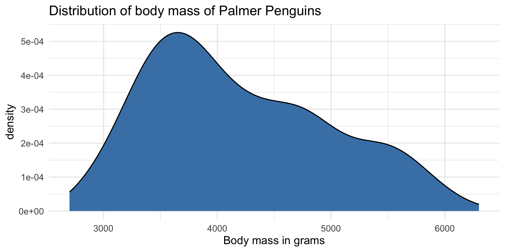
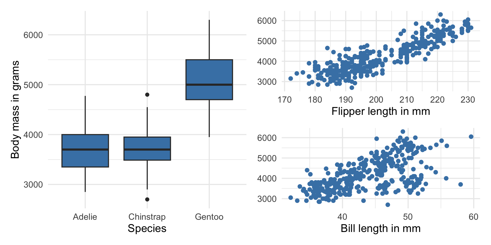

# load packages
library(tidyverse)
library(tidymodels)
library(openintro)
library(patchwork)
library(knitr)
library(kableExtra)
library(colorblindr)
library(palmerpenguins)
# set default theme and larger font size for ggplot2
ggplot2::theme_set(ggplot2::theme_minimal(base_size = 16))Multiple linear regression (MLR)
Computational setup
Topics
Introduce multiple linear regression
Interpret coefficients in multiple linear regression model
Compute predictions and associated intervals for multiple linear regression models
Considering multiple variables
Data: Palmer penguins
The penguins data set contains data for penguins found on three islands in the Palmer Archipelago, Antarctica. Data were collected and made available by Dr. Kristen Gorman and the Palmer Station, Antarctica LTER, a member of the Long Term Ecological Research Network. These data can be found in the palmerpenguins R package.
. . .
# A tibble: 342 × 4
body_mass_g flipper_length_mm bill_length_mm species
<int> <int> <dbl> <fct>
1 3750 181 39.1 Adelie
2 3800 186 39.5 Adelie
3 3250 195 40.3 Adelie
4 3450 193 36.7 Adelie
5 3650 190 39.3 Adelie
6 3625 181 38.9 Adelie
7 4675 195 39.2 Adelie
8 3475 193 34.1 Adelie
9 4250 190 42 Adelie
10 3300 186 37.8 Adelie
# ℹ 332 more rowsPalmer penguins

Variables
Predictors:
bill_length_mm: Bill length in millimetersflipper_length_mm: Flipper length in millimetersspecies: Adelie, Gentoo, or Chinstrap species
Response: body_mass_g: Body mass in grams
The goal of this analysis is to use the bill length, flipper length, and species to predict body mass.
Response: body_mass_g

| min | median | max | iqr |
|---|---|---|---|
| 2700 | 4050 | 6300 | 1200 |
Predictors

Response vs. predictors

. . .
Why do we want to use a single model with all the predictors instead of 3 separate models?
Multiple linear regression
Multiple linear regression (MLR)
Based on the analysis goals, we will use a multiple linear regression model of the following form
\[ \begin{aligned}\widehat{\text{body_mass_g}} ~ = \hat{\beta}_0 & + \hat{\beta}_1 \times \text{flipper_length_mm} \\ & + \hat{\beta}_2 \times \text{species}_1 \\ &+\hat{\beta}_3 \times \text{species}_2 \\ &+ \hat{\beta}_4 \times \text{bill_length_mm} \end{aligned} \]
Similar to simple linear regression, this model assumes that at each combination of the predictor variables, the values body_mass_g follow a Normal distribution.
Multiple linear regression
Recall: The simple linear regression model assumes
\[ Y|X\sim N(\beta_0 + \beta_1 X, \sigma_{\epsilon}^2) \]
. . .
Similarly: The multiple linear regression model assumes
\[ Y|X_1, X_2, \ldots, X_p \sim N(\beta_0 + \beta_1 X_1 + \beta_2 X_2 + \dots + \beta_p X_p, \sigma_{\epsilon}^2) \]
Multiple linear regression
At any combination of the predictors, the mean value of the response \(Y\), is
\[ E(Y|X_1, \ldots, X_p) = \beta_0 + \beta_1 X_{1} + \beta_2 X_2 + \dots + \beta_p X_p \]
. . .
Using multiple linear regression, we can estimate the mean response for any combination of predictors
\[ \hat{Y} = \hat{\beta}_0 + \hat{\beta}_1 X_{1} + \hat{\beta}_2 X_2 + \dots + \hat{\beta}_p X_{p} \]
See Appendix A.3: Estimating the Coefficients for details.
Model fit
penguin_fit <- lm(body_mass_g ~ flipper_length_mm + species +
bill_length_mm, data = penguins)
tidy(penguin_fit) |>
kable(digits = 3)| term | estimate | std.error | statistic | p.value |
|---|---|---|---|---|
| (Intercept) | -3904.387 | 529.257 | -7.377 | 0.000 |
| flipper_length_mm | 27.429 | 3.176 | 8.638 | 0.000 |
| speciesChinstrap | -748.562 | 81.534 | -9.181 | 0.000 |
| speciesGentoo | 90.435 | 88.647 | 1.020 | 0.308 |
| bill_length_mm | 61.736 | 7.126 | 8.664 | 0.000 |
Model equation
\[ \begin{align}\widehat{\text{body_mass_g}} = -3904.387 &+27.429 \times \text{flipper_length_mm}\\ & -748.562 \times \text{Chinstrap}\\ &+ 90.435 \times \text{Gentoo}\\ &+ 61.736 \times \text{bill_length_mm} \end{align} \]
Note
We will talk about why there are two terms in the model for species soon!
Interpreting \(\hat{\beta}_j\)
The coefficient of bill_length_mm is 61.736. Select the best interpretation.
Interpreting \(\hat{\beta}_j\)
The estimated coefficient \(\hat{\beta}_j\) is the expected change in the expected value (mean) of \(Y\) when \(X_j\) increases by one unit, holding the values of all other predictor variables constant.
. . .
Example: The estimated coefficient for flipper_length_mm is 27.429. This means for each additional millimeter in a penguin’s flipper length, its body mass is expected to be greater by 27.429 grams, on average, holding species and bill length constant.
Prediction
What is the predicted body mass for a Gentoo penguin with a flipper length of 200 millimeters and bill length of 45 millimeters?
-3904.387 + 27.429 * 200 - 748.562 * 0 + 90.435 * 1 + 61.736 * 45[1] 4449.968. . .
The predicted body mass for a Gentoo penguin with a flipper length of 200 millimeters and bill length of 45 millimeters is 4449.968 grams.
Prediction, revisited
Just like with simple linear regression, we can use the predict() function in R to calculate the appropriate intervals for our predicted values:
new_penguin <- tibble(
flipper_length_mm = 200,
species = "Gentoo",
bill_length_mm = 45
)
predict(penguin_fit, new_penguin) 1
4449.955
Note
Difference in predicted value due to rounding the coefficients on the previous slide.
Confidence interval for \(\hat{\mu}_y\)
Calculate a 90% confidence interval for the estimated mean body mass a Gentoo penguins with a flipper length of 200 millimeters and bill length of 45 millimeters.
predict(penguin_fit, new_penguin, interval = "confidence",
level = 0.90) |>
kable(digits = 3)| fit | lwr | upr |
|---|---|---|
| 4449.955 | 4355.238 | 4544.671 |
Prediction interval for \(\hat{y}\)
Calculate a 90% prediction interval for the estimated body mass for an individual Gentoo penguin with a flipper length of 200 millimeters and bill length of 45 millimeters.
predict(penguin_fit, new_penguin, interval = "prediction",
level = 0.90) |>
kable(digits = 3)| fit | lwr | upr |
|---|---|---|
| 4449.955 | 3881.035 | 5018.875 |
Cautions
- Do not extrapolate! Because there are multiple predictor variables, there is the potential to extrapolate in many directions
- The multiple regression model only shows association, not causality
- To show causality, you must have a carefully designed experiment or carefully account for confounding variables in an observational study
Recap
Introduced multiple linear regression
Interpreted coefficients in multiple linear regression model
Computed predictions and associated intervals for multiple linear regression models
Next class
Types of predictors in multiple linear regression model
Complete Lecture 08 prepare